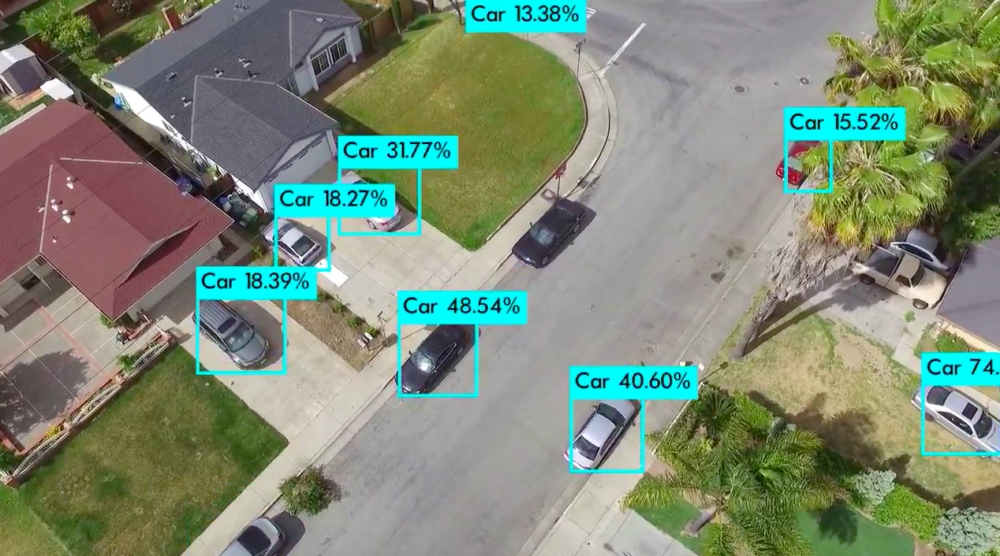

Project information
- Category: Interactive AI
- Collaborator: National University of Signapore
- Project date: 01 May, 2021
- Project Status:Done
Worked as a project intern with NUS CS dept. and Signapore AI deputy director Prof. Stefan Winkler in Vision and interaction group.
The idea was to combine facial expression with existing (or perhaps simple custom-developed) models for emotion recognition from speech and text, in order to enable full multi-modal emotion recognition. Performed a comprehensive literature review of feature and output level fusion models, reviewed the complex neural network architectures including Resnet50, etc.; identified suitable datasets. Trained the Mel-Frequency Cepstral Coefficients (MFCC) on a CRNN network, and 26 other low level descriptive audio features from openSMILE on various supervised regressors for higher accuracy and Applied 3D Convolutional Neural Network and LSTM model to fuse features from the two modalities.